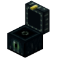

SomeMineGame.com IS STILL UNDER CONSTRUCTION. EXPECT BUGS.

What Is VariableEnderChests?
Allows for player's to have enderches sizes from 1-6 rows and a command to access it. Admins can also modify players' ender chests.
How Do We Use VariableEnderChests?
We use it to give players extra storage and an easily accessible ender chest. We also only monitor player's ender chests if needed for moderation in events such as chunk bans. We'll only access an ender chest after banning the player.
How Does VariableEnderChests Work?
Where Can You Get VariableEnderChests?
VariableEnderChests is free on their SpigotMC page. You can click the link below.
VariableEnderChests on SpigotMC